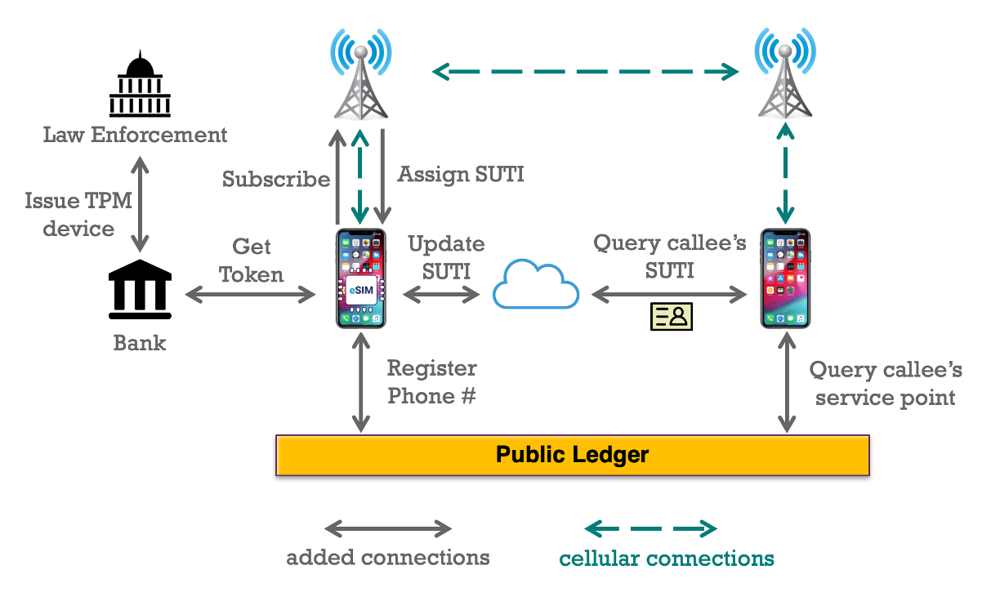

Protecting User Location Privacy from Mobile Network Operators

Achieving Anonymity with Incoming-Call Routing and Accountability
Mobile tracking is a serious privacy concern that worries many mobile phone users. Although several privacy-enhancing techniques have been added to the 5G network, the current system only protects mobile users' privacy against outsider attacks. As an insider, the mobile network operator (MNO) knows a mobile user's permanent identifier and its associated access history, thus can easily locate a mobile user and create a mobility profile or activity profile about this user.
The objectives of this project include 1) Anonymity: legitimate mobile subscribers can access the network anonymously, without revealing their unique (real) ID; different connections made by the same user at different times shall not be linkable. This is the foundation for disabling mobile tracking and mobile profiling. 2) Accountability: Although the MNO alone cannot identify or profile a user, the design allows identification of a UE and recovery of its mobility history under legal intervention, e.g., when the MNO is working with an authorized law enforcement entity (with a warrant). 3) Utility: Support of the important mobile network functions, particularly the voice call function and billing. The current mobile system relies on the knowledge of UE's location to direct phone calls. The new system should be able to direct phone calls to the desired callees without actually knowing who the callees are. The new system should also support the popular charging plans: monthly limited or unlimited plans or pay-as-you-go without knowing the real user ID for each connection made. 4) User-controlled privacy: Privacy is ultimately context-specific and an individual user's own choice. Our design will allow users to control the level of privacy they will risk under their own mobile phone use contexts. 5) Scalability and efficiency: Privacy enhancement technology will introduce additional overhead, at both MNOs and UEs. Our architecture design must be scalable to support a massive number of distributed mobile users and the execution be efficient to operate using the currently available mobile hardware.
Our solution includes an anonymous authentication mechanism that allows the UE to retrieve a temporary identifier which we call Subscription Temporary Identifier (SUTI) to replace Subscription Permanent Identifier (SUPI). SUTI can be refreshed by the user through the eSIM profile provisioning. To enable call routing, we propose a novel callee discovery process in which the caller is responsible for finding the random ID (SUTI) used by the callee at the time of calling, and then passing this SUTI to his SN for call routing. Accountability is achieved in the design of the credentials.
Proposed Work
◾ Quantify location privacy and automate user-controlled privacy protection. The goal is twofold: (1) developing an analytical framework to quantify a UE's privacy risk associated to MNO's knowledge of various side information and attack methods and (2) developing practical SUTI refreshing strategies for a UE to ensure sufficient location privacy while factoring in the trade-off with SUTI refreshing overhead.
◾ Anonymize the eSIM profile provisioning process. This can be achieved using an anonymous authentication based on the credentials issued by the eSIM manufacturer.